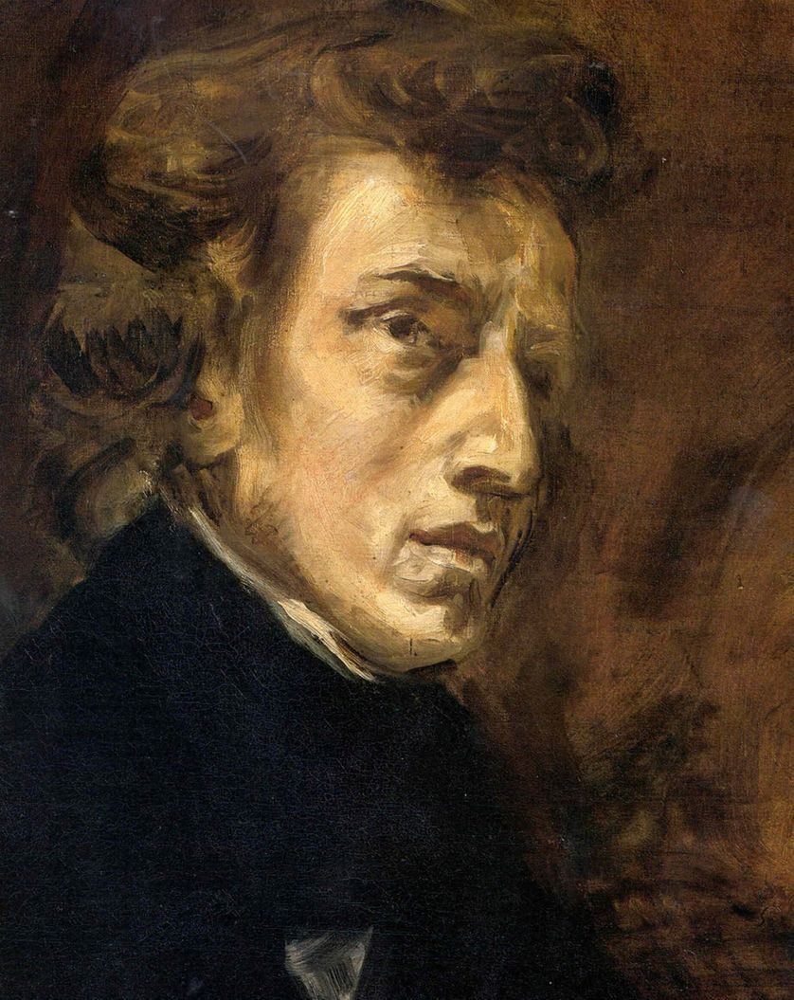

Écrits › Chroniques & réflexions
Les relations entre collègues
15 septembre 2020

« Ceci est entre nous... c'est (Liszt) un excellent relieur, qui met sous couvertures les oeuvres des autres »
Chopin
Vous est-il déjà arrivé de faire l'objet d'un compliment dont vous n'étiez pas tout à fait certain que celui en fut véritablement un, voir de vous faire carrément charger par un confrère ?
Eh bien les grands compositeurs non plus n'échappent pas à ce genre de choses. Et parfois, les relations entre musiciens tournent carrément à la guerre ouverte et sans merci.
Cette semaine je vous propose de faire un petit tour des différents commentaires, sorties et diatribes, qu'ont pu se faire les compositeurs entre eux.
Ainsi, et malgré le fait que ces deux là furent amis, voici ce que Chopin pensait réellement de Liszt en tant que compositeur :
Lettre à Delphine Potocka
« Liszt à eu l'idée d'écrire des variations sur le thème de certaines de mes Etudes ; je lui ai poliment conseillé de se mêler d'autre chose. Il s'en est plaint à toute sorte de gens, disant que je n'avais pas empêché Kalkbrenner de composer des variations sur l'une de mes mazurkas, tandis que je refusais le même privilège à mon ami Liszt. il répète sans cesse cette histoire aux autres, mais vis-à vis de moi, il est d'une politesse extrême, comme je le suis avec lui. C'est un homme étrange ; il est incapable de sortir de son cerveau quoi que ce soit qui ait quelque valeur devant Dieu ou devant les hommes ; mais l'oeuvre lui fait venir l'eau à la bouche, comme un chat convoitant un bol de crème. Voyez-vous, Liszt prend un tube à lavement en guise de télescope pour regarder les étoiles. Puis il fait descendre du ciel l'étoile qu'il a choisie, l'habille d'un costume mal coupé, orné de rubans et de jabots, la coiffe d'une énorme perruque, et lance cet épouvantail dans le monde. Il y a des gens qui l'admirent, mais je maintiens que c'est un habile ouvrier qui n'a pas trace de talent ; il déguise la pauvreté de son inspiration sous des tours habiles, vous ensorcèle et vous éblouit si bien par ses acrobaties que vous jureriez avoir affaire à un artiste de génie, alors qu'il n'est qu'un escroc bien malin. Mais il compense son manque total de talent créateur par un don remarquable pour reproduire les idées et les coups de maître des autres compositeurs. »
Chopin
Extrait de: C. Wierzynski, La vie de Chopin, Robert Laffont, 15 décembre 1952, p. 185